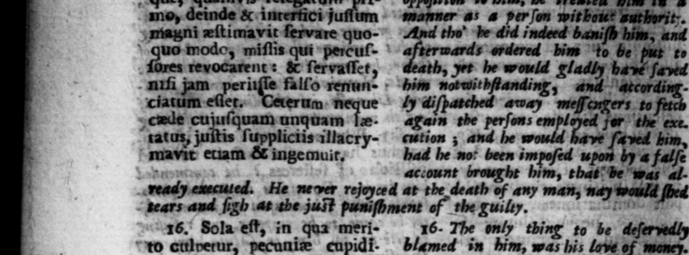
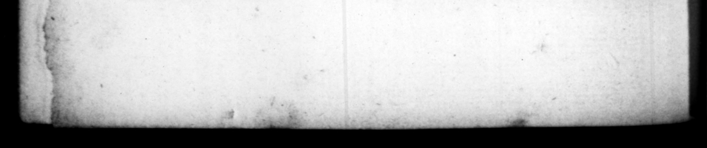

— * "RY \ % 4 4 n p wt TEL 0 hk A - 6. 4 a 2 7 o 1 . 7 TIE » 7 p ' * = * - — 1 * 1 k Þ = x ” 7 * EE 4 * — * - +834 21C/SUEBET.*PRA 2 qui & reverſum „ m nomine Aua ſalutave- ar © rat, & in prætura omnibus ſalate bim at bi return edlictis fine hunore ac mentio- by bis are name Veſpa ſian, ne ulk tranſmiſerat, non ante when he came tobe frerbr, paſſed ſluccenſuit, quam altercationi- by in a bir edif;, withou the bus iuſolentiſſimis poene in reſpe# - or mention of him, yet be was ordinem redactus. Hunc quo- ne angry with bim, "till by bis rude que, quamyis-relegarym - oppoſition to him, he treated him id s mo, deinde & intertici juſſum manner as 4 perſon wit bout putherit-. matzni æſtimavit ſervare quo- tho be did indeed baniſh him, an g -=— modo, miſhs qui percuſ ' afterwards ordered bim "to be put to niſi revocarent : & ſervaſſet, th, yet he would gladly bat ſavid | rifle falſo renun- oe notwithſtanding, and atcordingciatum etlet. erum — — ö diſpatched away ers to cue cujuſquam unquam læ· again the perſons Mes 4 the exe. tatus, juitis ſuppliciis illacry- cution ; and he bow ſaved him, mavit etiam & ingemuir, had he no! been impoſed wpont by a falſe — 8333 5 ma ery bets: a him, that be was al_ ready executed. He ne ver ced at the death of any man, nay would tears and ſigh at the juit — bod of the guilty, pr * 16. Sola eſt, in qua meri- 16- The only thing to be deſervedly to cttlverur, -pecanize cupidi- blamed in him, . love of money. tas. Non enim contentus o- For he was not ſatisfyed with 1874 miſſa ſab Galbha vectigalia re- the taxes that been vocaſſe ; nova & gravis Gaba, but others, and bend ones too, addidiſſe ; © anxiffe tributa raiſed the tribute of the provinces, awd \ n nonnullis & du- — — #4 ow. He 44 2 licafſe 3 negotiationes quo- ofe iſed a ſort of tra that Ke vel privato pudendas —— tor been ſcandalous even in © propalam exercuit, 1 poſes below the * of an — quedam tantum, ut ris ing great quantities ods ſtea diftraheret, - Nec can- in order to retail them 2 #0 . — -*Qidaris quidem honores, reiſve tage. Nay be made no [cruple to ſell the tam innoxiis quam © nocenti- _ great officer of ſtate to rbec 0 dus, abſoluciones venditare | and pardons "too in under pro cunctatus eſt. Creditur eri- he am "procuratorum rapaciſſimum quemque. ad ampliora officia ex = —— promovere. quo locuplet iores * : N ui vulgo pro ſpeongits. 42 1, quod — & ſiccos madefaceret, & i meret humentes. Quidam natura cup idiſſimum tradunt, - idque ex probratum ei à ſene dubulco, qui negata ſibi gratutta libertate, quam imperium adeptum ſuppliciter orabat, proclamaverit. Zwlpem Num muntere, 301 meres, Supe fox < * af the rapaciour among the r r to enſranchiſe hi — 4 bis —

